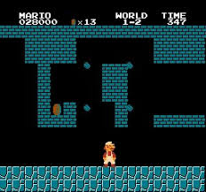
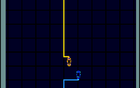

Retro Game Archive is a digital collection documenting the most influential video games from the early arcade era to modern retro-inspired classics. This project explores how gaming technology, design, and culture evolved over time.
The rise of arcade cabinets and home consoles. Iconic titles like Space Invaders and Pac Man, Asteroids, and Tetris and Tron. helped define the industry.
Gaming expanded into new dimensions with franchises like
Multiplayer gaming grew rapidly, and retro design inspired new titles influenced by earlier generations.

The rise of arcade cabinets and home consoles. Iconic titles like Super Mario Bros. helped define the industry. Released in 1985, Super Mario Bros. was a groundbreaking platformer that set new standards for game design and storytelling. It introduced players to the Mushroom Kingdom and the iconic characters of Mario and Luigi, solidifying its place as one of the most influential games in history. It was a game released for Nintendo Entertainment System (NES) and it was a huge success, selling over 40 million copies worldwide. The game’s innovative level design, tight controls, and memorable music made it a timeless classic that continues to be celebrated by gamers of all ages. It introduced side-scrolling mechanics and power-ups like the Super Mushroom, and world-based level progression. It was a game that set the standard for platformers and is still beloved by gamers today.

The rise of arcade cabinets and home consoles. Iconic titles like Tron helped define the industry. Tron was developed by Bally Midway and released in 1982. It was based on the popular science fiction film of the same name and featured innovative vector graphics that created a unique visual style. The game consisted of four different sub-games, each with its own gameplay mechanics, including light cycle Tron is known for the use of computer-generated graphics, which was groundbreaking at the time. The game’s distinctive neon visuals and fast-paced gameplay made it a hit in arcades and helped establish it as a cult classic. Tron’s influence can still be seen in modern games that draw inspiration from its futuristic aesthetic and gameplay elements. Game was designed by Dave Theurer, who also created the classic arcade game Tempest. Tron was one of the first games to use a color vector display, which allowed for smooth and vibrant graphics that stood out in arcades. The game’s unique blend of action and strategy, along with its connection to the popular film, contributed to its lasting legacy in gaming history. The game was developed in a collaboration between Bally and Disney, capturing the essence of the film while introducing players to a new interactive experience. Tron’s success in arcades helped pave the way for future games that combined cinematic storytelling with engaging gameplay.
This archive serves as a historical record of video games that shaped the industry. It is not a gaming platform, but a curated reference highlighting milestones in interactive entertainment.